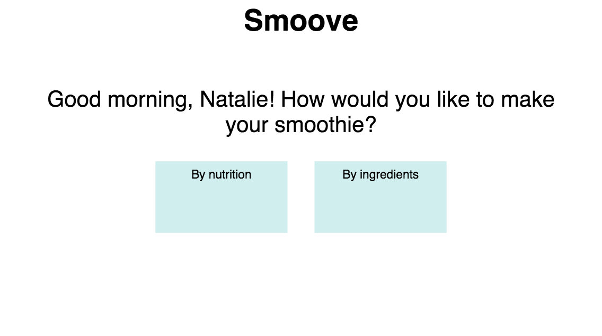
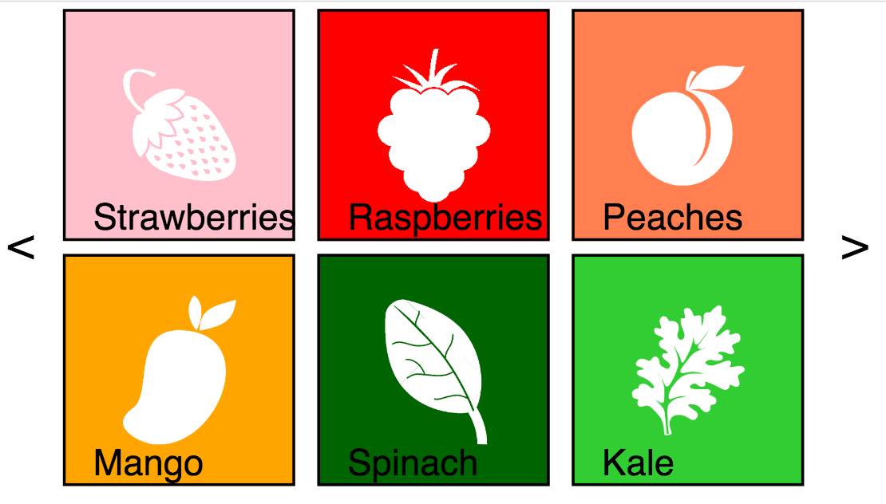
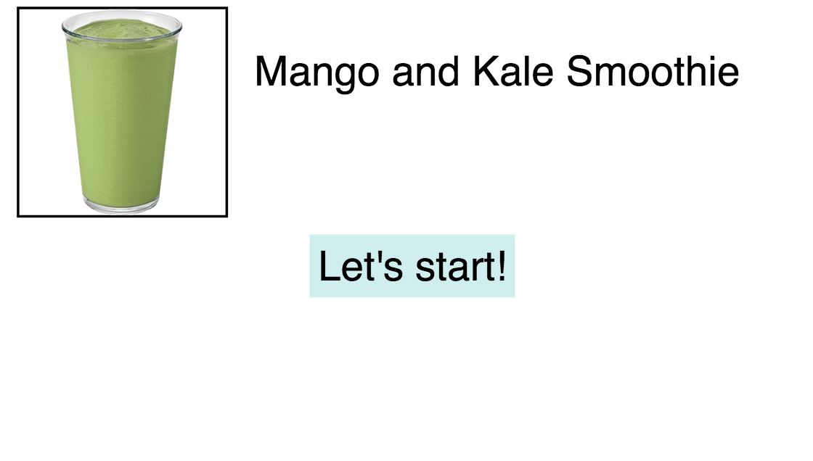
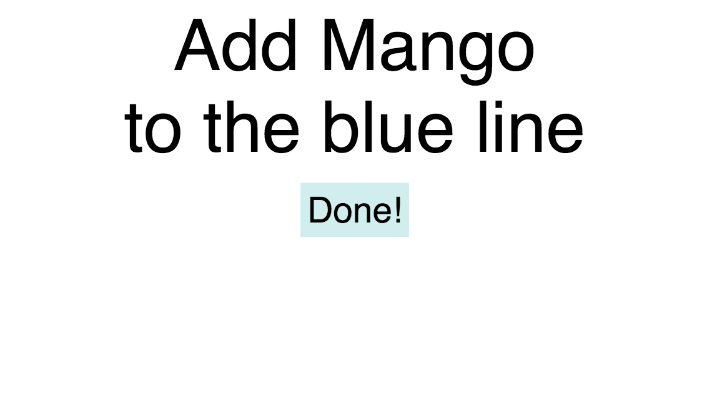
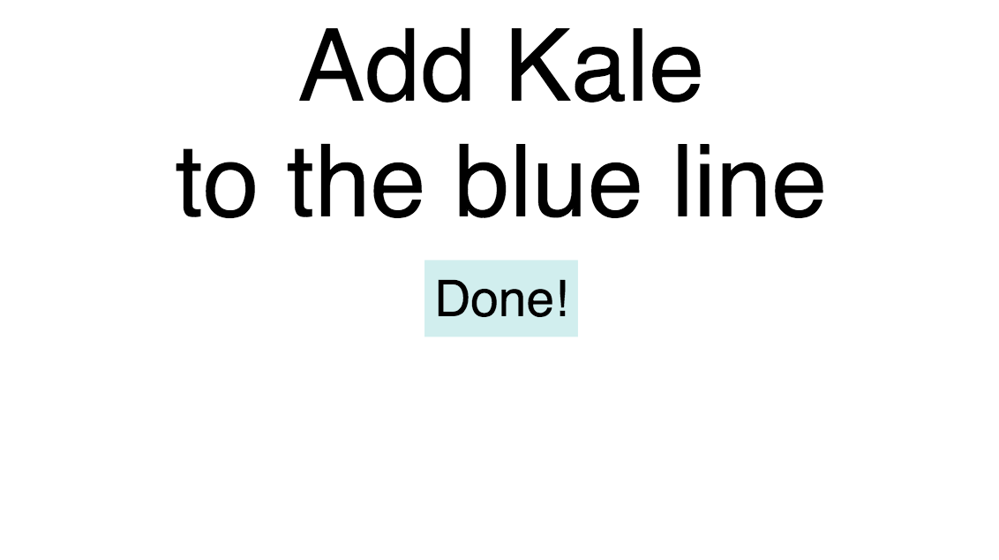
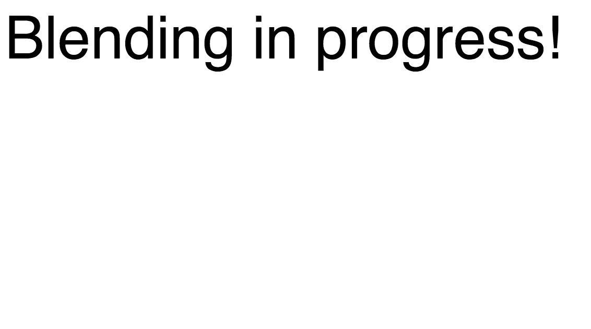
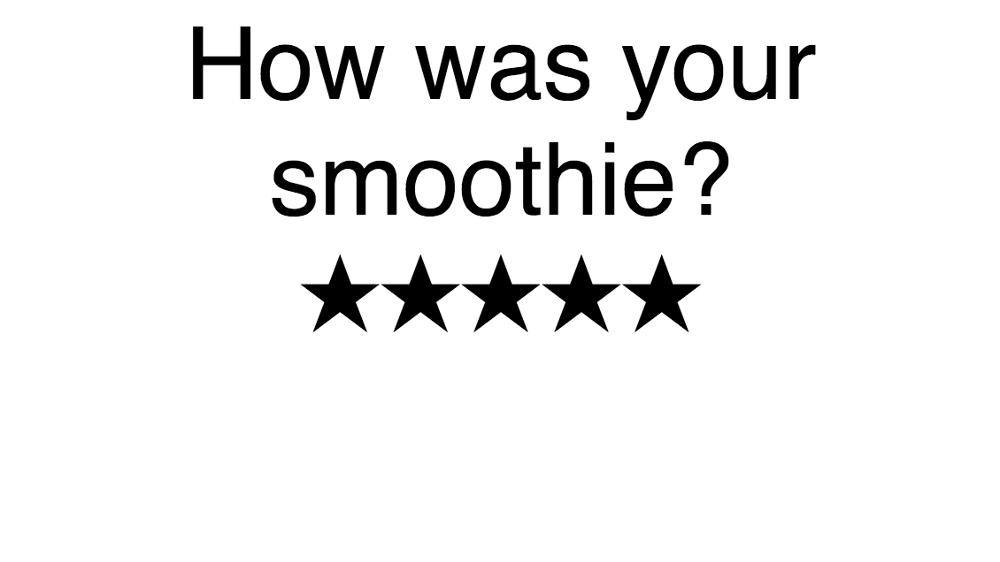

The goal of this class was to build a product with physical and digital components. After need-finding, my team of 4 settled on the question: How might we enable a healthy, nutritional lifestyle for individuals with time limitations.
Through building a persona and brainstorming, we settled on smoothies because they can be nutritious and can be consumed in a portable, discreet manner.
User observations showed us there seemed to be two distinct classes of users: experienced and novice. The experienced users knew how to make smoothies because they had been doing so for so long, but the novices didn’t know what they were doing and were generally unhappy with the results. We noticed that no one, not even the novices, looked up a smoothie recipe online. We concluded that there was a high and wasteful barrier to entry into this experienced group and set out to tackle that problem.
We invented a blender that would walk you through the smoothie making process. The interface allowed the user to choose which ingredients to use and then used lines of light to tell the user how much of an ingredient to pour in, eliminating the need to measure and allowing users to jump right in.
The final product consisted of an Arduino board that controlled the lights, a touch screen interface, and a working blender.
      